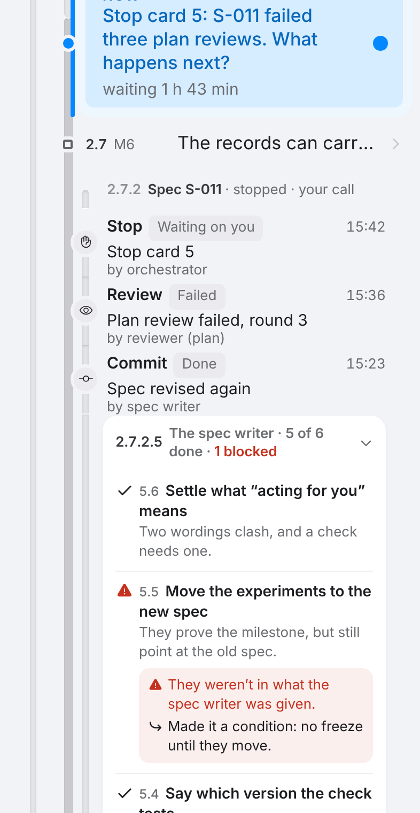
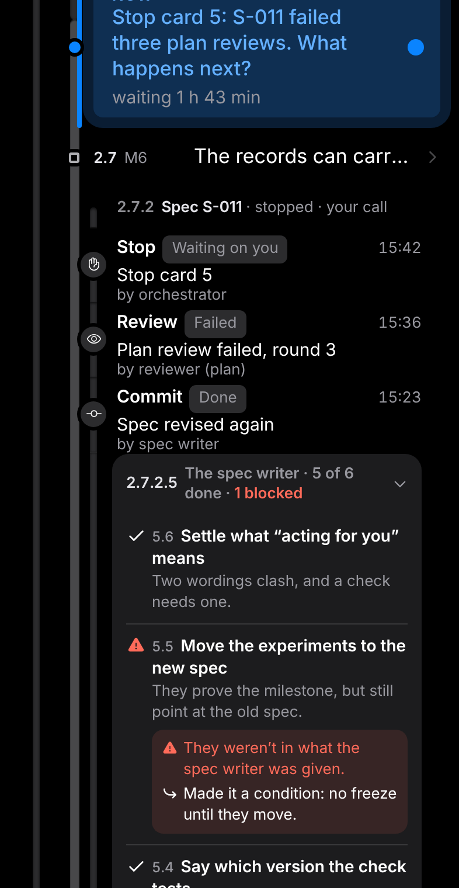
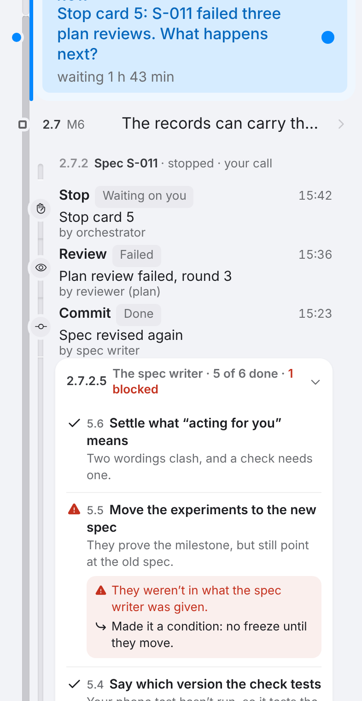
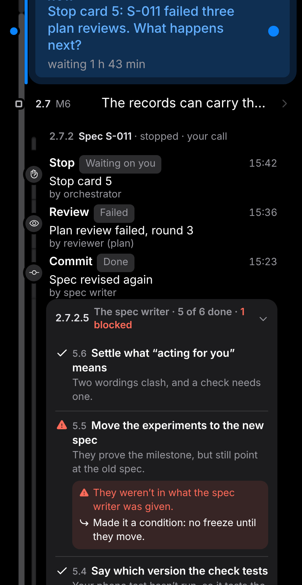
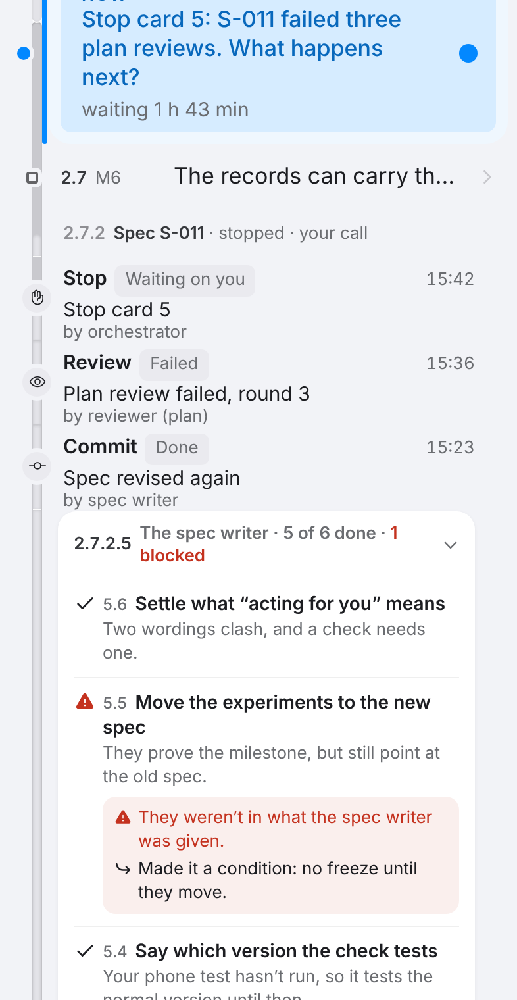
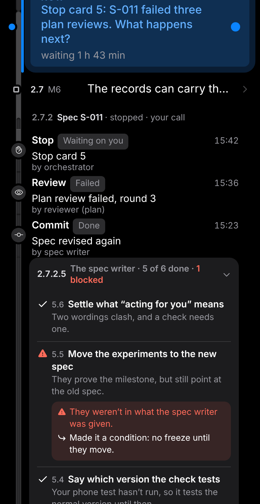

<title>Lane Width</title>
<meta name="claude:viewport-fit-sides" content="cover">
<style>
/* Layout: v12 first, then each option, light and dark side by side (stacked on a phone). Tokens follow the Desk Element Library. */
:root { --ground:#f2f3f7; --surface:#ffffff; --text-1:#1c1d21; --text-2:#6b6d71; --separator:#e7e9ed; --rec:#0a6fc0;
  --sans:-apple-system,BlinkMacSystemFont,"SF Pro Text","Inter","Segoe UI",Roboto,sans-serif; }
@media (prefers-color-scheme: dark) { :root:not([data-theme="light"]) { --ground:#000000; --surface:#1c1c1e; --text-1:#f2f2f7; --text-2:#98989f; --separator:#38383a; --rec:#9fd0ff; color-scheme:dark } }
:root[data-theme="dark"] { --ground:#000000; --surface:#1c1c1e; --text-1:#f2f2f7; --text-2:#98989f; --separator:#38383a; --rec:#9fd0ff; color-scheme:dark }
body { background:var(--ground); color:var(--text-1); font:400 17px/1.4 var(--sans);
  padding-left:max(16px, env(safe-area-inset-left, 0px)); padding-right:max(16px, env(safe-area-inset-right, 0px)); padding-block:24px 48px; }
main { max-width:1000px; margin:0 auto; display:flex; flex-direction:column; gap:32px; }
h1 { font:700 27px/1.15 var(--sans); margin:0; text-wrap:balance; }
p { margin:0; max-width:70ch; }
.lede { display:flex; flex-direction:column; gap:10px; color:var(--text-2); font-size:15px; }
.opt { display:flex; flex-direction:column; gap:12px; }
.hd { display:flex; flex-direction:column; gap:6px; }
.tag { font:600 13px/1 var(--sans); letter-spacing:.06em; text-transform:uppercase; color:var(--text-2); }
.tag.rec { color:var(--rec); }
h2 { font:600 19px/1.25 var(--sans); margin:0; }
.opt p { font-size:15px; color:var(--text-2); }
.pair { display:grid; grid-template-columns:repeat(2, minmax(0, 393px)); gap:16px; }
figure { margin:0; display:flex; flex-direction:column; gap:6px; min-width:0; }
figure img { width:100%; height:auto; border:1px solid var(--separator); border-radius:18px; }
figcaption { font-size:13px; color:var(--text-2); }
@media (max-width: 640px) { .pair { grid-template-columns:minmax(0, 1fr); } }
</style>
<main>
<header class="lede"><h1>Lane width</h1>
<p>You said the branch design on the left takes up too much room from left to right. Each picture is the real v12 page with M6 open on a phone 393 points wide. Only the lines change. The floating buttons are hidden so the lines show.</p>
<p>Only the spacing changes in A to C. The seven kinds, the grooves, main set apart, colour and the milestone shapes stay as they are.</p></header>
<section class="opt"><div class="hd"><span class="tag">Now</span><h2>v12 as it is</h2><p>The project line on the far left, main's groove, then each sprint's lane 26 points further over. Text starts about 112 points in, close to a third of a 393-point phone.</p></div>
<div class="pair"><figure><figcaption>Light</figcaption></figure><figure><figcaption>Dark</figcaption></figure></div></section>
<section class="opt"><div class="hd"><span class="tag">Option</span><h2>A · Tighter lanes</h2><p>The same lines, closer together: a sprint's lane 16 points from main, slightly smaller icons. Text starts about 94 points in.</p></div>
<div class="pair"><figure><figcaption>Light</figcaption></figure><figure><figcaption>Dark</figcaption></figure></div></section>
<section class="opt"><div class="hd"><span class="tag rec">Recommended</span><h2>B · Tighter, and no project line inside a project</h2><p>As A, and the far-left project line is dropped once you are inside a project, since the chip at the top already says which one. Main moves to the edge. Text starts about 64 points in.</p></div>
<div class="pair"><figure><figcaption>Light</figcaption></figure><figure><figcaption>Dark</figcaption></figure></div></section>
<section class="opt"><div class="hd"><span class="tag">Option</span><h2>C · One line until sprints overlap</h2><p>As B, but a sprint's events sit on main's line. A sprint gets its own lane only when two run at the same time. Text starts about 58 points in.</p></div>
<div class="pair"><figure><figcaption>Light</figcaption></figure><figure><figcaption>Dark</figcaption></figure></div></section>

</main>
